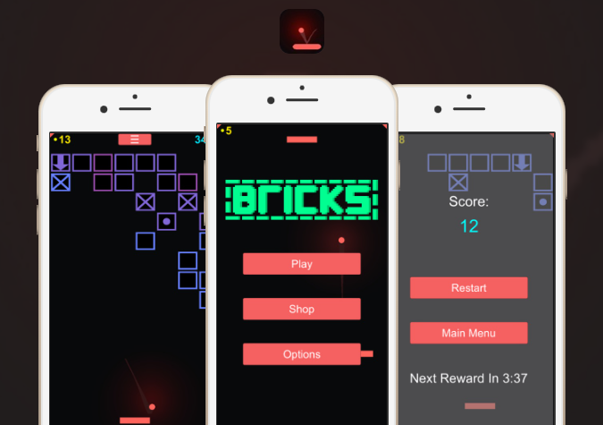
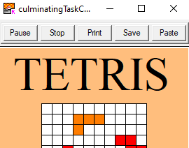

|
iOS "Brick Breaker"-style game with advanced physics, developed in tandem with Andrew Zeitler.
The Apple Developer Program's pricing was not worth keeping the app online for.
|
 |
|  |
Written in the Turing procedural programming language entirely on the Turing IDE.
A welcomed memory of one of my first highschool projects.
|